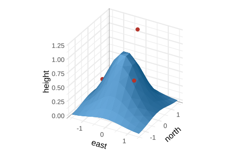
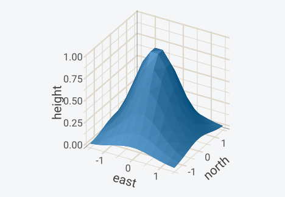

ggplot3d adds three-dimensional layers and a z position scale to ggplot2, the R package for building plots from data and aesthetic mappings. This tutorial assumes basic R and data frames. It ends with a surface, observations and a saved plot.
Map positions with
aes().Draw a surface with
geom_surface_3d().Save the plot with
ggsave().
Installation
# install.packages("pak")
pak::pak("gcol33/ggplot3d")Source installation needs a C++17 compiler. The README installation section lists the tools for each operating system.
Plotting observations
Each row records three positions in arbitrary units. Map the column names to x, y and z. The call returns a ggplot object that can be printed, extended and saved.
observations <- data.frame(id = c("a", "b", "c"),
east = c(-1, 0, 1), north = c(0, 1, -1), height = c(0.4, 1.2, 0.8))
p <- ggplot(observations, aes(east, north, z = height)) +
geom_point_3d(size = 3, colour = "#B5342B") + coord_3d()
p
The z axis labels the height column. The camera projects these three positions onto the plotting page. Change its angles in Camera and framing.
Adding a surface
The surface data contain one row for every pair of grid positions. Its heights describe a curved surface in the same units as the observations. Both layers contribute geometry to the panel scene, the collection used to resolve which parts are visible.
surface <- expand.grid(east = seq(-1.5, 1.5, length.out = 12),
north = seq(-1.5, 1.5, length.out = 12))
surface$height <- with(surface, exp(-(east^2 + north^2)))
p <- ggplot(surface, aes(east, north, z = height)) +
geom_surface_3d(fill = "#2E6F9E") +
geom_point_3d(data = observations, size = 3, colour = "#B5342B") +
coord_3d()
p
Grid neighbours form triangles. Surface pieces cover observations wherever they lie in front of them. Layers also shows columns and contours, and Surfaces, solids and fields shows meshes and statistical surfaces.
Reading another table
For a file with other column names, change the file path and the names inside the mapping. This example writes a temporary comma-separated file so the whole example can run in a fresh session.
path <- tempfile(fileext = ".csv")
write.csv(observations, path, row.names = FALSE)
measured <- read.csv(path)
ggplot(measured, aes(east, north, z = height)) +
geom_point_3d(size = 3) + coord_3d()
Supplying a surface height
A surface needs a z mapping. The following call shows the message produced by a missing mapping.
ggplot(surface, aes(east, north)) + geom_surface_3d() + coord_3d()
#> Error in `make_layer_3d()`:
#> ! Problem while computing stat.
#> ℹ Error occurred in the 1st layer.
#> Caused by error:
#> ! A surface requires a z aesthetic.Map the height column to z to connect the grid points.
ggplot(surface, aes(east, north, z = height)) +
geom_surface_3d(fill = "#2E6F9E") + coord_3d()
Saving the plot
The default backend draws vector geometry. The file extension selects the graphics device. Use the raster backend for a scene rendered into pixels; Output backends explains resolution and device requirements.
Where next
The z scale: transform heights and control ranges across facets.
Axes, legends and pane styling: label the plot and adjust its panes.
Camera and framing: set the view and keep its bounds stable.
Output backends: choose rendering and save an image.
Visibility: understand overlapping geometry.